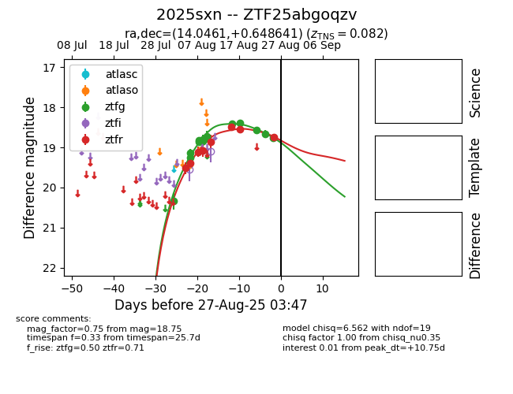

Target 2025sxn at 2025-08-27 10:49, see:
FINK: fink-portal.org/ZTF25abgoqzv
Lasair: lasair-ztf.lsst.ac.uk/objects/ZTF25abgoqzv
ALeRCE: alerce.online/object/ZTF25abgoqzv
TNS: wis-tns.org/object/2025sxn
YSE: ziggy.ucolick.org/yse/transient_detail/2025sxn
alt names
ZTF25abgoqzv (ztf,fink)
2025sxn (tns,yse)
coordinates:
equatorial (ra, dec) = (14.0461,+0.64864)
galactic (l, b) = (125.4767,-62.19965)
photometry
last ztfg=18.76, ztfr=18.75
13 ztfg, 8 ztfr detections
